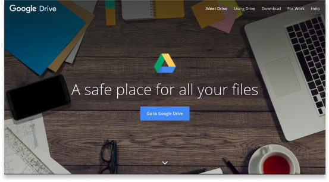
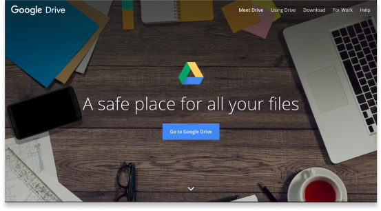

Troop

My client was looking for a way to stand out and add their mark to a saturated cloud storage market. Initially, they were unsure of the best way to do this, and enlisted my help with creating an app.
My role in this project was to research what was missing in the existing cloud storage market, narrow down the focus for the app, and then design visual and functional solutions. I also created the brand identity for my client.
I discovered a few key issues that were prevalent with other cloud storage apps:
Troop was created as a fun, inviting alternative with increased security, consistent formatting, and a simple pricing platform with generous storage options.
The client was interested in the app having the following features:
As well as the following collaborative features, which were inspired by their desire for leveraging the "network effect" to generate growth:

 

Key Positive Features:
Key Negative Features:


100% of my survey participants used cloud storage, so I had a good sample to work from. And, 100% used Google Drive, which confirmed them as my strongest competitor.
100% of participants also used cloud storage for personal use, with 61% using it for school as well, and 50% for business. The most popular media type was word documents (94% total), however, 72% of those users also use cloud storage for other media types.
Regarding collaboration, 78% of users used sharing/collaboration features in cloud storage apps, so this seemed to be a worthwhile feature as well. Only 21% of sharers used social media to share items though, which suggested that the client’s idea of “social sharing” might be limited. I chose to focus on shareable links as they were the most popular, and could cover email sharing and direct sharing as well.
One participant wrote in a request for “something hosting similar document-creation features as Google Drive, but with more emphasis on user privacy,” which seemed like a good goal for the app. Another wanted an app that was “less complex yet still comprehensive.” And most of all, people wanted something that was low cost with more space, which came up as an opportunity in my competitive analysis as well.
The top 3 features based on responses were:
Both were expert-level young professionals: a blogger and a grad student. These “super-users” were both very busy and had high expectations for their apps.

Staying organized is my highest priority!

With all of the available cloud storage options out there, I shouldn’t have to pay for a great experience.


The most important tasks were based on the client’s priorities and the survey results.
Google Drive overall was the best inspiration, but some of their tasks still seemed as though they could be simplified. I created my own flows to be as straightforward as possible. There are no social media decisions to make during onboarding, and the actions within the dashboard stem from a single key word, such as Lock (for security and formatting) and Share (for shareable links).


My goal was to keep the layout simple, clean, and intuitive for any user. I consolidated the app’s actions into one sidebar so the user would only have to look in one section to find what they were looking for. I also provided only two plan options for simplicity.
The first round of testing on my high fidelity wireframes was less successful than expected- two out of three users had trouble completing all of the assigned tasks. Users pointed out some content issues as well.
Based on the test results, I modified my designs to include more written instructions on the welcome screens in lieu of arrows, revised some of the content and buttons for clarity, and removed the “Choose Plan” screen for users who already picked a plan when signing up from the bottom of the homepage. I also added a hover screen so new users could see the app’s password requirements when creating an account.

To separate the app from other brands focused on security, a more relaxing, peace of mind approach was taken. Instead of using fear tactics to scare users, Troop was designed to make them feel like their important files would be taken care of, and that everything was going to be ok. Soft greens and friendly images were chosen to cultivate this effect.
The name Troop references a group of kangaroos, suggesting strength in numbers and also a military level of security. The kangaroo was chosen to embody the warm and cozy feeling of the brand, and for their protective pouches.


Next, I designed polished mockups including the changes from the first round of testing.
Overall, this round of testing was much more successful. After implementing my changes, all participants were able to complete each task easily, and the feedback I received on the visual design was positive. Each user also mentioned emotions/feelings consistent with the desired brand, including relaxing, friendly, and non-threatening. The content was considered to be clear and understandable by all users.

One item stood out during testing: the folder (pouch) graphic for the dashboard. After the first preference tests, my users still expressed some dissatisfaction with the winning shield-shaped graphic. So, I experimented with a few new graphics and performed additional testing.
In round 2, there was a tie between two of the new options, so I decided to combine them into one more graphic option. I also received feedback from testers that they wanted to see the graphic in context, so I changed the 3rd and final preference test to include the dashboard background. This round gave me a clear winner (the combined version from the previous round), and I was able to choose a graphic that 2/3 of my users preferred.
While it was challenging starting a project without much direction from the client, I found that trusting the design process and taking the time to think through each step was extremely helpful. With research, the problems started to solve themselves, and when they didn’t, I was able to perform more testing to answer any additional questions that came up.
What seems intuitive to me is not necessarily what is intuitive to other people! Sometimes brief instructions can make all the difference between a happy user and a frustrated user. Also, thinking about the text used on buttons can go a long way.
When time is running out and something still isn’t quite right, it can be tempting to move forward without exploring all of the options. However, it is much better to proceed with confidence knowing that you have found the best solution to the problem. With more time, I would have liked to perform even more testing of the app as a whole.
Overall the feedback I received was very helpful and constructive, but I also heard comments like, “I don’t understand the relationship between kangaroos and cloud storage.” From what I have learned, even the most established brands have their critics, so they don’t try to please everyone. The key seems to be to create something thoughtful, stay consistent with the desired branding, and build recognition over time.